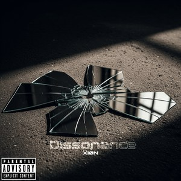

🎤 Hard life. Harder bars.
XiØN
East Coast lyricism. Soulful vulnerability.
Rapper, songwriter and producer. Street-rooted storytelling, R&B melody, and lyrics about survival, love and loss.
Listener reactions Fan voices
"Let's go!! 🔥🔥🔥 After seeing this, I could really hear this on a movie soundtrack."
@LoopGodMusic (YouTube)
"Nice smooth track, I like your style."
@klaud (SoundCloud)
"🔥🔥🔥"
@ziplok_ (Instagram)
"SHIT GOES HARD HOMIE"
Small Town Ridas (SoundCloud)
"flames ■♤"
@lee_coly (BandLab)
"On point. Nice lyrics!"
@collective-underground (SoundCloud)
Discography
Music
Loose Thoughts Vol. 1 through Vol. 3, then Dissonance in 2025.

Dissonance
Featured tracks from the catalog. Play them right here, or open the full discography on Spotify.
The artist / the journey
Rooted in truth. Shaped by experience.
Sean C, professionally known as XiØN, is a rapper, songwriter, and producer raised in the Flatbush neighborhood of Brooklyn, New York. Born to Caribbean parents, he grew up surrounded by culture, rhythm, and street scenarios that shaped him. Music became both an outlet and a form of reflection, with Hip-Hop serving as the foundation. Since 2007, he has worked behind the scenes with other artists while quietly developing his own sound. After a potential record deal fell through, he took a hiatus from music between 2013 and 2017, returning in 2018.
The Sound
XiØN’s style is rooted in East Coast lyricism but taps into other elements such as the smooth sounds of R&B at times. His raw, introspective bars reflect the weight of street life, while melodic textures give space to explore love, loss, and emotion. Whether dissecting heartbreak or narrating survival, his delivery remains sharp, unfiltered, and rooted in truth. This versatility allows him to shift seamlessly between gritty storytelling and soulful vulnerability. His raw approach has come to be a signature of his style, often releasing rough draft versions of projects.
The Journey
As Hip-Hop shifted toward Trap and Drill, so did XiØN’s location. Now based in Tampa, Florida, he stayed committed to his roots with a New York sound. While still ghostwriting and occasionally producing, his focus is on building his own artistry. Valuing authenticity over algorithmic clout chasing, his music is shaped by experience, growth, and reflection.
The Vision
Aiming to make music that transcends trends and fleeting moments, he strives to connect on a deeper level with lyrics that resonate with listeners. In an industry leaning toward surface-level content, he continues to create music grounded in meaning.
“Aiming to make music that transcends trends and fleeting moments.”
XiØN · The VisionBusiness / Collaborations
Contact
For business inquiries, feel free to reach out via the methods below.
info@xiondigital.netFor Artists
For collaborations, please provide links to your music and a brief introduction. Serious inquiries only.